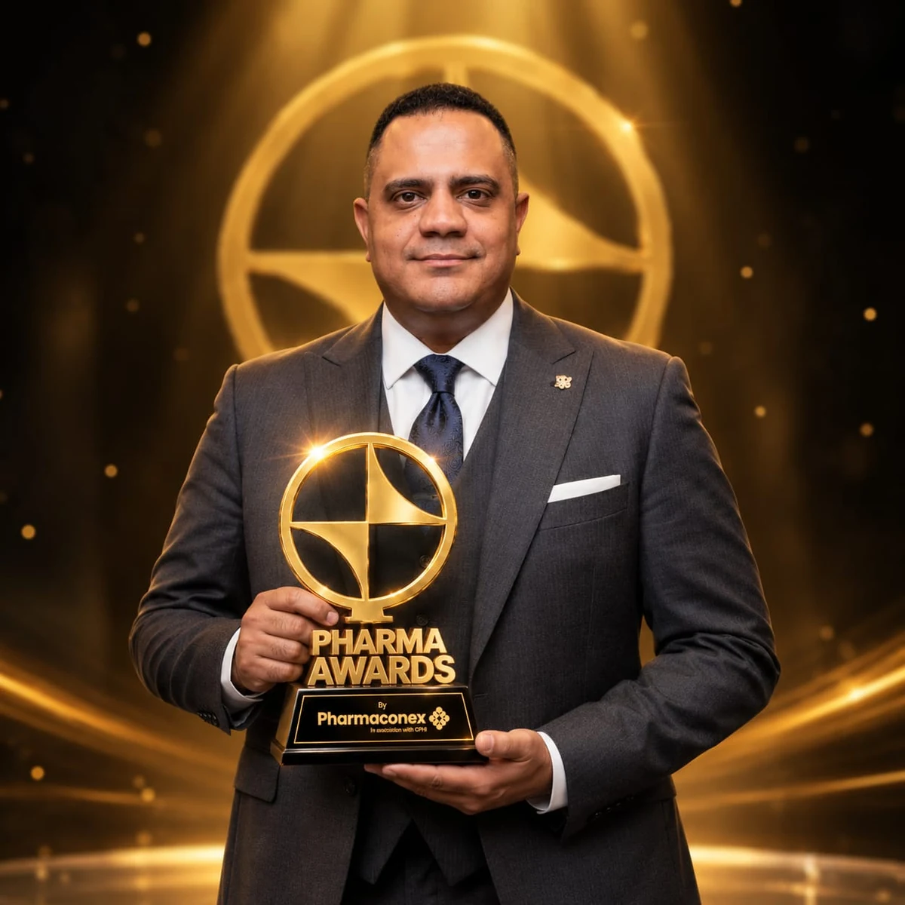

Mahmoud Salama
TECHNOLOGY, DIGITAL TRANSFORMATION & ENTERPRISE SOLUTIONS EXECUTIVE
From engineering depth to national-scale technology leadership.
Leading national-scale platforms, enterprise architecture and technology transformation across healthcare and government — combining executive ownership with deep engineering judgment.

Systems → Architecture → Scale
18+years across Egypt and Oman
54people in the current technology organization
7direct reports
EGP 150Mannual IT budget accountability
38K+MedIQ users
11K+healthcare facilities
2,000+suppliers
FLAGSHIP TRANSFORMATION · MEDIQ
Re-architected a national healthcare procurement and supply ecosystem in ~6 months.
End-to-end executive ownership of the MedIQ transformation using a fully in-house 54-person technology organization — from re-architecture and rebuild through migration, reconciliation, testing, performance/security validation, training, parallel operation, cutover, stabilization and production transition.
★
Pharmaconex Awards 2026Excellence in Digital Transformation
One national enterprise platform — shared capabilities across the full operating chain.
CURRENT EXECUTIVE MANDATE
Own the technology function — not just the project.
I lead a 54-person technology organization with 7 direct reports across applications, data and integration, infrastructure and security oversight, cloud/platform operations, and service management.
Applications & DeliveryData & IntegrationInfrastructure & SecurityCloud & PlatformsService Management
Accountability includes technology investment, enterprise architecture, delivery governance, operational ownership and an annual IT budget of EGP 150M.
FLAGSHIP PROOF
Selected enterprise impact.
The strongest cases are weighted by current relevance and executive scope — not by giving every project equal visual weight.
SAP Strategic Medical Warehouses
Greenfield bi-directional SAP integration led from the UPA side across requirements, integration architecture, master-data harmonization, security, SIT/UAT, go-live and production reconciliation.
Microsoft Dynamics 365
EGP 11M enterprise integration across procurement, supply, inventory, finance and reporting — governed through process alignment, contracts, mapping, SIT/UAT, security, stabilization and handover.
MedIQ E‑Tender
Governed enterprise procurement workflow spanning 10 linked steps, 30 operational stages, 15 Chairman approvals and 20+ governed roles / permission groups.
Mobile Inventory & Asset Management
Expansion of the MedIQ ecosystem into mobile inventory, asset maintenance and geographic asset mapping using GS1 APIs, GTIN/GLN and MapTiler.
Healthcare REST APIs
Production APIs personally designed and developed for health-sector integrations using token-based authentication, structured JSON contracts, beneficiary/prescription/dispensing retrieval and GTIN-enabled product identification.
HTA Platform
Designed and developed a governed digital platform for structured health-technology-assessment workflows, converting a specialized institutional process into an enterprise system.
Oman National Educational Portal
Hands-on engineering and delivery on a national education platform serving approximately one million users, within a broader 15+ platform Oman portfolio.
MEDIQ E‑TENDER · GOVERNED PROCUREMENT WORKFLOW
Enterprise process digitization with control built into the workflow.
The e‑tender model is a governance system as much as a digital process: role separation, approval controls, committee workflows, auditability, routing, escalation and permission boundaries are embedded in the operating design.
PUBLIC RECOGNITION · EXTERNAL VALIDATION
Claims should be inspectable — not just impressive.
Selected public sources independently validate the platform recognition, national operating scale and the broader data-and-decision-support direction around UPA.
MedIQ — Pharmaconex Awards 2026
MedIQ received the Excellence in Digital Transformation award at Pharmaconex 2026, recognizing the integrated institutional and technical effort behind the national procurement, supply and medical-inventory ecosystem.
Pharmaconex 2026Excellence in Digital Transformation
View Public Recognition →Souq Al Dawaa · 3 Sep 2026
UPA official LinkedIn coverage
The Egyptian Authority for Unified Procurement published the MedIQ award and described the platform as an integrated digital system spanning procurement, supply and medical inventory.
Read Official UPA Coverage →Official UPA LinkedIn page
38K users · 11K facilities · 2,000+ suppliers
Public coverage of UPA's medical inventory-governance ecosystem confirms the modern national-scale figures used throughout this portfolio.
38K users11K healthcare facilities2,000+ suppliers
Verify Platform Scale →Souq Al Dawaa · 2 Sep 2026
UPA × IQVIA — health policy and analytics
The UPA–IQVIA memorandum covers health-policy analysis, health-data use, data-governance models, institutional capability building and evidence-based decision support.
Read External Evidence →Souq Al Dawaa · 10 Jul 2026
Official professional links
NEXT CONVERSATION